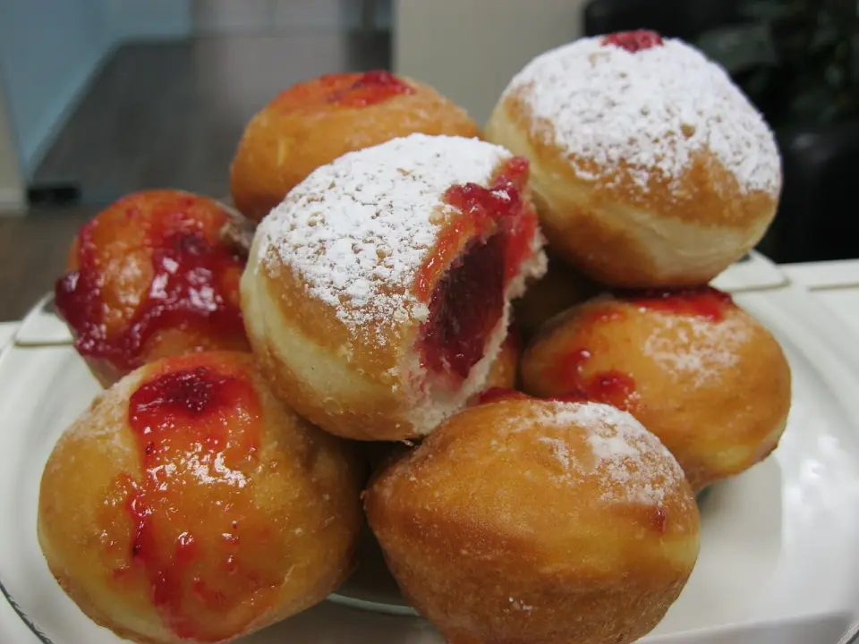

המטבח של השמן
לזכר נס השמן, נהוג בחנוכה לאכול מאכלים מטוגנים כמו לביבות (לביבות תפוחי אדמה פריכות) וסופגניות (אווריריות, ממולאות בריבה או בקרם).

מצרכים
אופן ההכנה
- מפעילים את הבצק. שמים את הקמח בקערה גדולה, עושים גומה במרכז ומוסיפים את השמרים המפוררים, את החלב הפושר וכפית סוכר. מערבבים בעדינות.
- לשים. מוסיפים את שאר הסוכר, את המלח, הביצים והחמאה הרכה. לשים עד שמתקבל בצק חלק, גמיש ואחיד.
- התפחה ראשונה. יוצרים כדור, מניחים בקערה, מכסים במגבת לחה ומשאירים לתפוח שעה במקום חמים, עד שהבצק מכפיל את נפחו.
- עיצוב. על משטח מקומח מרדדים את הבצק בעזרת מערוך לעובי של 8 עד 10 מ״מ. חותכים עיגולים בקוטר של 5 עד 6 ס״מ בעזרת חותכן או כוס. לסופגניות עם חור, חותכים עיגול קטן של סנטימטר אחד במרכז כל עיגול.
- התפחה שנייה. מניחים את העיגולים על נייר אפייה מקומח, מכסים ומשאירים לתפוח במקום חמים שעה וחצי עד שעתיים.
- טיגון. מחממים הרבה שמן במחבת עמוקה או בסיר (בעומק של 3 עד 4 ס״מ) על אש בינונית־גבוהה, בלי שיעלה עשן. מטגנים את הסופגניות בקבוצות קטנות עד שהן זהובות משני הצדדים (דקה עד שתיים לכל צד).
- גימור. מוציאים אותן על נייר סופג כדי לסלק את עודפי השמן. ממלאים בריבה בעזרת שק זילוף (אם הכנתם אותן שלמות) ומפזרים בנדיבות אבקת סוכר או סוכר לבן.

מצרכים
אופן ההכנה
- מגררים. מקלפים את תפוחי האדמה ומגררים אותם יחד עם הבצל, בפומפייה גסה או במעבד מזון.
- סוחטים היטב. מניחים את התערובת במגבת נקייה וסוחטים כדי להוציא כמה שיותר נוזלים. זה הסוד ללביבות פריכות.
- מערבבים. בקערה מערבבים את תפוחי האדמה והבצל עם הביצים, הקמח, המלח והפלפל.
- מטגנים. מחממים שמן בעומק של סנטימטר במחבת. מוסיפים כפות מהתערובת, משטחים מעט ומטגנים 3 עד 4 דקות לכל צד, עד שהן זהובות היטב.
- מגישים. מניחים על נייר סופג ומגישים חמות עם רסק תפוחים או שמנת חמוצה.